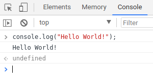
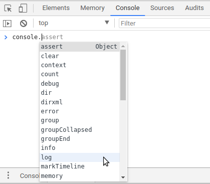

3 CARA MENAMPILKAN DATA DALAM JAVASCRIPT
1. MENGGUNAKAN FUNGSI.
Fungsi console.log() adalah fungsi untuk menampilkan teks ke console Javascript.
Contoh penggunaan:
console.log("Hello World!"); |
|---|

Fungsi console.log() biasanya digunakan untuk debugging. Karena setiap pesan error di Javascript selalu ditampilkan di dalam Console.
Selain console.log(), terdapat juga beberapa fungsi untuk debugging seperti console.debug(), console.info(), console.error(), console.dir(), dsb.

2.MENGGUNAKAN FUNGSI.
Objek document adalah objek yang mewakili dokumen HTML di dalam Javascript. Dalam objek document, terdapat fungsi write() untuk menulis sesuatu ke dokumen HTML.
Contoh :
HASILNYA :

3.MENGGUNAKAN.
innerHTML adalah sebuah atribut di dalam (objek) elemen HTML yang berisi string HTML. Dengan innerHTML, kita dapat menampilkan output ke elemen yang lebih spesifik.

HASILNYA :